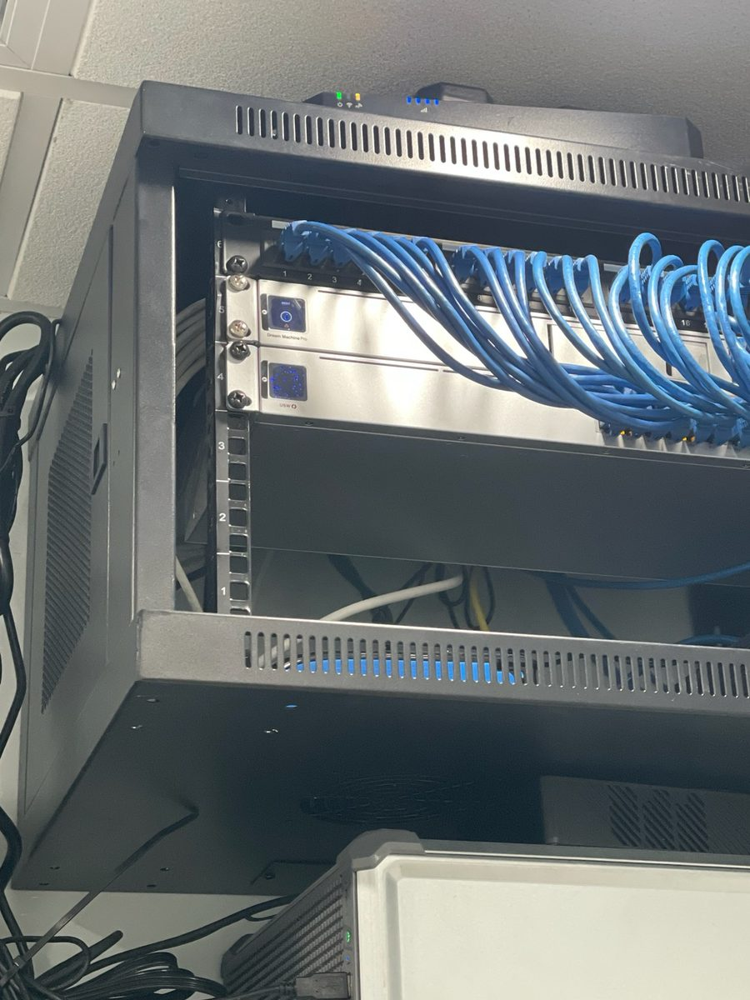
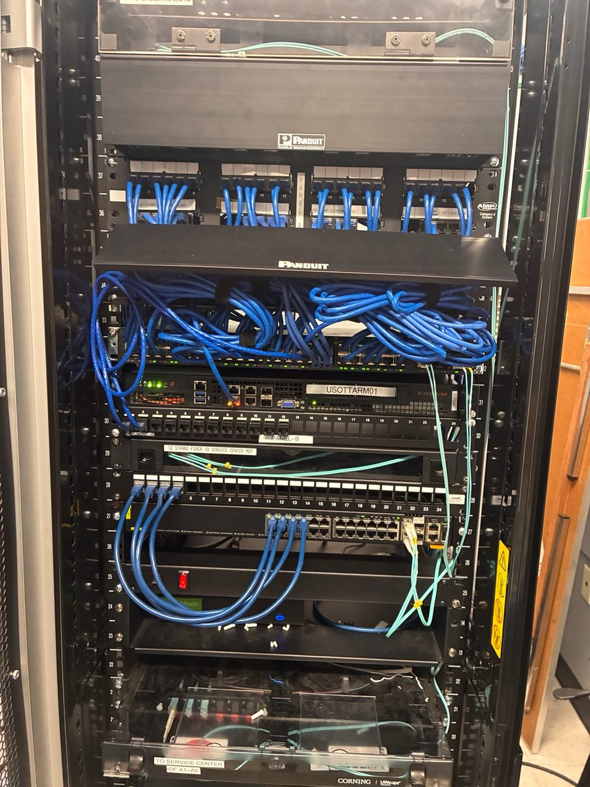
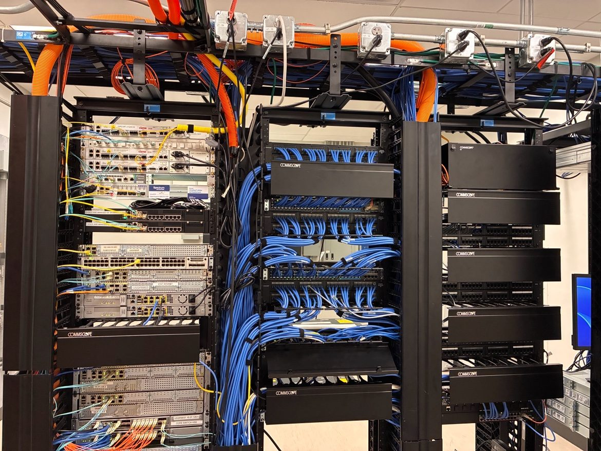
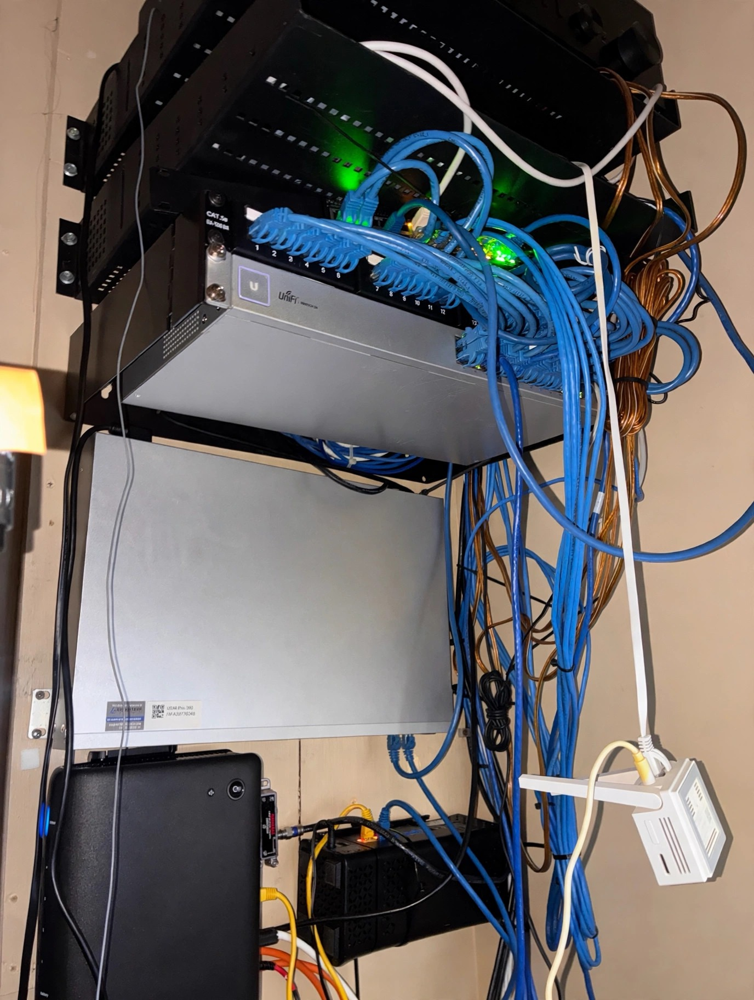

Proof
Real networks. Real results.
No fluff.
We're onboarding our founding clients now — and we're honest about it. The engagements below are representative of the founder's field work: real patterns, real problems, real fixes. Client names and identifying details are withheld; no specific client is named.
Representative engagements
The work that built BowdenCore.
Multi-location dental group — Winter Park / Lake Nona
The situation: aging consumer gear plus a SonicWall, spread across locations with no consistent standard. Intermittent VoIP drops during patient hours; guest Wi-Fi complaints were a weekly occurrence.
The engagement: a SonicWall-to-UDM migration across the group — part of 30+ UDM installs the founder has delivered in the field — with proper VLAN segmentation: staff, imaging, guest, and voice traffic isolated the way they should be. One standardized build, deployed the same way at every location, with a 10-practice migration completed with zero unplanned downtime.
Result: VoIP drops eliminated, guest Wi-Fi complaints down 90%+, and full as-built documentation delivered with the handover.
Healthcare-adjacent practice — HIPAA posture
The situation: a practice handling protected health information on a flat network with a consumer-grade perimeter — no meaningful audit trail, no separation between clinical and admin traffic.
The engagement: layered a Fortinet NGFW in front of the UniFi access layer, added Huntress EDR endpoint visibility and SOC monitoring, and segmented clinical vs. admin traffic end to end — the same stack the founder runs daily across 50+ healthcare-adjacent client sites.
Result: a clean, defensible audit trail and segmented clinical vs. admin traffic — a HIPAA posture the practice can actually show an auditor.
Hospitality / multi-building property — Kissimmee / I-Drive corridor
The situation: multiple buildings, each with its own ad-hoc setup — different SSIDs, different gear, and a support burden that meant constant truck rolls and after-hours calls.
The engagement: standardized UniFi deployment across buildings with consistent SSIDs, seamless roaming, and UniFi Protect cameras on the same managed plane — one build, repeated cleanly, instead of a snowflake network per building.
Result: one consistent network across every building — truck rolls and after-hours calls down significantly, and guests stop noticing the Wi-Fi at all.
How we leave every closet
Labeled. Color-coded. Documented.
Understandable at 2 AM.
The test for every BowdenCore install is simple: could another engineer walk in cold — or could we, at 2 AM during an outage — and understand the whole network in under five minutes? If not, the job isn't done.




“I’ve spent the last 5+ years in the field fixing the same problems most MSPs create with license-heavy stacks and snowflake networks. BowdenCore is the MSP I always wished existed.”— Antonio Bowden, Founder & Senior Network & Security Engineer
Founding clients
Get in on the ground floor.
We're accepting a small number of founding clients across Greater Orlando. Founding clients get direct access to the founder-engineer, input on the service roadmap, and locked-in pricing.